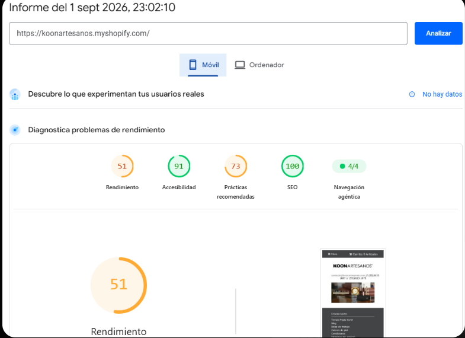
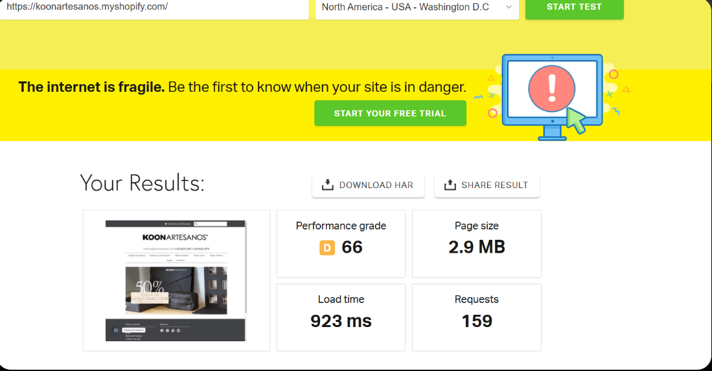

El veredicto
El sitio nuevo está mejor construido que la tienda anterior. Le queda un fallo grave —bien localizado— y tres arreglos de horas.
Pesa 5 veces menos que Shopify, descarga 8 veces menos archivos, responde 3 veces más rápido y tiene 4 veces más contenido. La reputación de la marca en internet ya está en el dominio nuevo.
En celular, la imagen de portada tarda 16,7 segundos en verse. El máximo recomendable son 2,5. Además faltan tres cosas básicas: el mapa del sitio, el título principal de cada página y unos títulos con las palabras que la gente busca.
Shopify tardaba 20,5 segundos en lo mismo. La lentitud en celular no la causó el cambio de plataforma: venía de antes y era peor. El sitio nuevo la mejoró sin llegar a resolverla.
Los números, uno al lado del otro
| Qué se midió | Shopify | Sitio nuevo | Quién gana |
|---|---|---|---|
| Peso de la página | 2,9 MB | 542,6 KB | Nuevo · 5× más ligero |
| Archivos que descarga | 159 | 19 | Nuevo · 8× menos |
| Velocidad en computadora | 65/100 | 79/100 | Nuevo |
| Velocidad en celular | 51/100 | 48/100 | Empate · ninguno aprueba |
| Imagen principal en celular | 20,5 s | 16,7 s | Nuevo, pero ambos muy lejos |
| Contenido de la portada | 201 palabras | 847 palabras | Nuevo |
| Título en Google | Con palabras clave | Solo «Koon Artesanos» | Shopify |
| Mapa del sitio | Sí | No existe | Shopify |
| Título principal (H1) | Sí | Ninguno | Shopify |
| Calidad de construcción | 73/100 | 92–96/100 | Nuevo |
Las pruebas
Tres herramientas independientes, el mismo día. Ninguna cifra de este reporte es estimada.
SEOQuake
Revisa que la página tenga bien puestos los elementos que Google necesita leer.
Shopify
Sitio nuevo
Los dos errores del sitio nuevo: no hay mapa del sitio y solo el 2,9 % de la página es texto. A eso se suma que la portada no tiene título principal.


Google PageSpeed Insights
Mide la experiencia real de carga simulando un teléfono de gama media con red 4G.
Shopify · celular
Sitio nuevo · celular
En computadora el sitio nuevo gana claro: 79 contra 65. En celular los dos suspenden, y ahí es donde entra la mayoría de los clientes.


Pingdom Tools
Mide cuánto pesa la página y cuántos archivos necesita descargar.
Shopify
Sitio nuevo
Resultado contundente a favor del sitio nuevo. La plantilla de Shopify arrastraba el peso de muchas aplicaciones instaladas encima.


El único fallo grave, explicado
Pingdom dice que el sitio carga en 292 milisegundos. PageSpeed dice que la imagen tarda 16,7 segundos en verse. Las dos mediciones son correctas, y juntas señalan exactamente el problema.
Con 542 KB de peso total, la lentitud no puede ser por el tamaño de las fotos. La imagen de portada se está pidiendo tarde: primero se descarga y ejecuta el código, y solo después se solicita la foto.
En una computadora esa cadena tarda un instante. En un celular con 4G se convierte en quince segundos de pantalla en blanco, y la mayoría de los visitantes se va antes.
No hay que rehacer el sitio ni comprimir el catálogo de fotos. Es una corrección puntual de programación: que la imagen de portada se descargue primero, antes que el código. Días de trabajo, y el diseño no se toca.
Qué hacer
- Corregir el orden de carga de la imagen de portadaAltaBajar de 16,7 s a menos de 3 s en celular. Es donde se pierde la venta.
- Publicar el mapa del sitioAltaPara que Google encuentre todas las páginas, no solo algunas. Horas de trabajo.
- Poner un título principal en cada páginaAltaHoy la portada no tiene ninguno. Horas de trabajo.
- Reescribir títulos y descripcionesAltaCon las palabras que la gente busca, como hacía Shopify. Más clics con el mismo tráfico.
- Decidir qué pasa con la tienda de ShopifyAltaSigue publicada y visible. O se cierra y se redirige, o se le da un rol distinto.
- Revisar la seguridad del servidorAltaCertificado, actualizaciones y protección de formularios. Shopify se encargaba solo; ahora no.
- Aligerar el código y ordenar el contenidoMediaSolo el 2,9 % de la página es texto. Hay relleno mezclado con el contenido real.
- Crear una página de regalos corporativosMediaEs el segmento de mayor ticket y hoy no tiene puerta de entrada propia.
Velocidad en celular de 48 a más de 90 · imagen de portada de 16,7 s a menos de 2,5 s · errores de SEO de 2 a 0 · proporción de texto de 2,9 % a más de 15 % · y solicitudes de regalos corporativos medidas y en crecimiento.